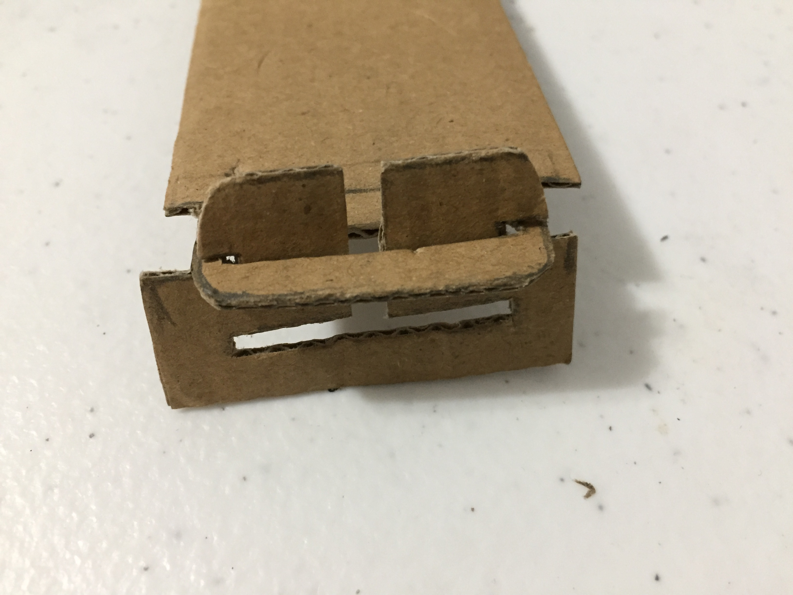

Phase 1: Introduction, Reading and Simple Tesselation amd Module Exercise
Modular

Artist's Statement
I had folded some origami pieces before, but it was mainly for hobby, and precision with origami was never my forte--when I tried puttin the pieces together, I found that precision plays quite a role in this modularity considering the whole piece is built on the idea of each piece being the same. However, while the nitpicking hasn't subsided, the overal aesthetic of the piece isn't severly damged by each individual's imperfection--the beauty that comes from the contribution of each pieces made quite a spetacle.
Modified Module

Artist's Statement
When I started modifying the module, I didn't have a concept in mind--it was more to the nature of explorin the possiblities of the module. Eventually, the piece started to take form of an animal, and the real work started there--I put them together, then took apart many times trying to build a chicken shape. For the tail, I wanted to make a traditional shape of a rooster's tail, but with the limited amount of module on hand, I settled for the current shape. Overall, I'm quite happy how this small exercise turned out.
Tessellation

Artist's Statement
Initially I used Illustrator to create the shape rather than hand craft. Of course that led to me redoing the piece. When I was redoing the piece, I wanted to explore other pattern instead of recreating the same pattern I had created with AI. I took inspiration from the famous Japanese artwork--"The Greate Wave of Kanagawa"--and created my own landscape of mountains and wave onto the module. I later combined this module with the previous AI file to created a tessellation pattern that I used as background for this website. You can see it to your left.
Modifiled Tessellation

Artist's Statement
In modifying the tessellatioon, I wanted to created a mermaid shape. It was quite tricky to push the narrative, until I notice that I could use the red tessellation as a depiction of hair; from then on, it was smooth sailing.
Phase 2: 3D Fastener BrainStorming Designs, Mockups and design approuches
Joinery Mockups
Key joint



Tenon joint


Artist's Statement
When I started the project, my focus was to research joints that we can potentially use rather than making as many as possible. Base on our past interaction with paper,I concluded that our group wouldn't be working with papers for our project anytime soon. Our group also did a good job communicating between one another so that we wouldn't repeat a tried joinery. Upon researching wood joineries, I decided to make mockups of joints that utilize key and tenons since they could be easily taken apart and I'm intrigued by their design. The result could have been better--the imperfections from hand craft still show--but for the time being, I have gotten a better understanding of these joints.
Phase 3 -- Goldilocks Laser tests: Intitial Designs tests for Fasteners -- Materials and Laser Cut design document
Artist's Statement
The initial agreement within the group was that we would try to build the whole project flat on the ground. My first approach was to stick to the key-fastener I researched in the second phase; but upon further consideration, I concluded that finger joint and tenon work best with the current design. My inspiration come from a honeycomb wine storage--the plan is to build a box out of two hexagon pieces by connecting them with 4 (or 6) rectangle/square pieces; on the surface of each rectangle/square is a series of holes that allows each bee-shape to connect via mechanicism similar to that of tenon-fastener.
The first pass came out pretty rough and didn't work well considering how thin some area was--one piece has missing part due to failure to considerate the balance of negative-positive space in the design. The second pass was much more refine, each piece fit together nicely. I'm happy with the feedbacks I got from the test.
Laser cut - test result
First Pass
First pass has mismatched finger joints and didn't connect very weel. Each pieces were also not uniform in size.
Second Pass
Second pass has more uniform shapes, getting more use out of negative spaces. The goal is to adjust the rectangles so that they fully cover honeycomb box; add more variety to bee shapes; and figuring out how to convey the theme better.
Phase 6 -- Presentation and Documentation Notes
Artist's Statement
The initial plan for the group was to build them flat on the ground; however, we agreed to still test the joints for 3D build. On the first laser cut test, I submitted my fastener but couldn't come due to having pre-arranged schedule on Friday; only Jasmin was available that day to be on campus for the cut. The initial check showed the fastener worked, but after a week went by before I heard the rest of the test's result from Jasmin, and found that the other pieces were loose. Back to the drawing board.
The second test, our group wasn't strategic with our approach--instead of testing a wide ranges of fastener, we only tested around four, and none of them fit. Back to the drawing board; this time Elizabeth took it on herself to design the fasteners--the goal was that each member would draw their shapes and send them to her, where she would put on fastener. Around this time, we also divide our role in the project, seeing the other member wasn't familiar with Illustrator, I decided to take on creating the schema, Kelvin would be in charge of sanding and painting the pieces after they're cut, Elizabeth would design the fastener and Jasmin would be in charge of the script.
On Monday of the week before we were all supposed to come in for the final cut, I caught a fever from my partner after her trip back home to help babysit her siblings. I'm still coughing till today, so I'm pretty sure it wasn't COVID, but I knew better than toying with the chance of getting others in trouble, so I checked with the group and they suggested I stay home on cut day; I agreed and check on them on Discord, that evening they sent me a text on Discord saying the cut went well. From that point onward, I mainly contributed by doing the schema and initiating update on the project's progress.
On designing the schema, I took inspiration from an education book I read a kid where small facts are scatter throughout the book. I presented two layouts with the group and they like both of them; however, I decided that since I contribute from afar while my teammates are driving back and forth, I should go big or go home. So I went big--I decided to demonstrate how the piece fit together by digitally putting them together in the schema; then I divided them into categories that our group focused on; I also decided to look up small facts that I can include in the schema without overwhelming the audiences--(these facts are separate from the group's video)--keeping them engaged through the schema. One theme that stuck with me throughout the project is the issue of "loss of pollinators" where bees lost their ability to navigate due to pesticides; I found that there is a project aimed to help increase the numbers of bees called "Bee Road", so I decided to mention it in the schema--our project, while being rich in information, were only touching the surface of the issue, so I thought we need a call-to-action so people whom paid attention to our project would have some guide on where to start getting involved in helping the bee.
Self-reflection
Overall, the project turned out really nice--the fasteners fit, the video was good, and the presentation and dare I say the schema were well-received. It is, however, a group project, so like any other group project it was messy. First thing first, I thought we could have communicate better: While I understand how taxing it is for other member to juggle between keeping social distance and cutting the piece, they didn't update with me through Discord very well--they told me that they would stay in touch through Discord, but the update message were later than the fact and too short to explain anything. Another issue is the missmatch in ambition, initially the whole group was open to testing 3D fastener which is why I tested 3D joint in the first laser cut, but midway through, the other members voted to changed into flat build and it took quite some efforts to create new shapes. Third, I felt like one way or another, Elizabeth ended up with way too much works when it could have been better distributed between members, e.g. when the fastener test failed the second time, she took it upon herself to design all the fastener again from scratch, and Kelvin and Jasmin agreed with her, so Elizabeth went ahead--this event, to my mind, set up a bad precedent where Elizabeth probably felt that everything is her's task to tackle and fix. She even designed the web page for documentation. I'm very grateful, but as a member of the group, I can't help but feel that had there been more frequent communication betwen members, it wouldn't have been so one-sided.
My contribution
I was prepared for the first test, gaining us some initial data on the fastener, thus providing a template for my group to base the design on.
Had new designs ready in time to test cut for the second test.
Participated in research about bees and putting down suggestion for possible theme to focus on.
Participated in group meeting outside of class.
Participated in trouble-shotting issuewe face with laser cut.
Participate and give feedbacks on meeeting, either on Zoom or Discord.
Deep dived into research about issue revolving human-bee relationship for the schema's fun/sad fact.
Pulled my weight in the project despite being sick.
Designed two layouts ( 1 , 2 ) for the schema, then combined them for a better final layout , then further improved the design.
{kind=link}
{kind=link}
{kind=link}
{kind=link}
I tried to depict loss of pollinators at the bottom of the latest schema
{kind=link}
Member's individual design